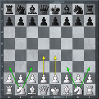

L'OUVERTURE
L’ouverture est la phase initiale d’une partie d’échecs dans laquelle les joueurs poursuivent quatre buts: occuper ou contrôler le centre, développer ses pièces, mettre son Roi en sécurité, créer un déséquilibre. La plupart des ouvertures, et des variantes au sein d’une ouverture, portent un nom, par exemple le nom d’un joueur qui a développé la pratique de cette ouverture, le nom d’un pays ou un nom décrivant le type de coups joués.
LA FOURCHETTE
Aux échecs, une fourchette est un coup tactique qui attaque deux pièces adverses ou plus à la fois, ceci afin d'obtenir un avantage matériel. En effet, l'adversaire ne pouvant protéger qu'une seule des deux pièces attaquées, l'autre sera perdue. On parle d'une pièce « faisant une fourchette » et de pièces « prises en fourchette ».